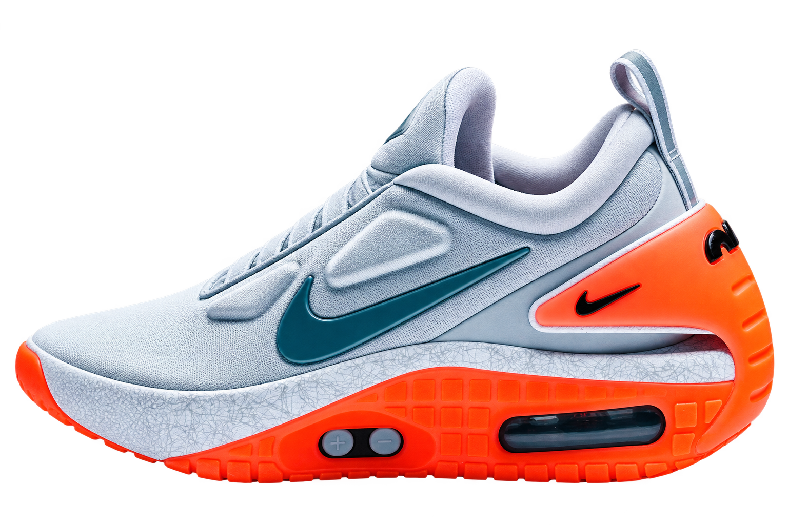
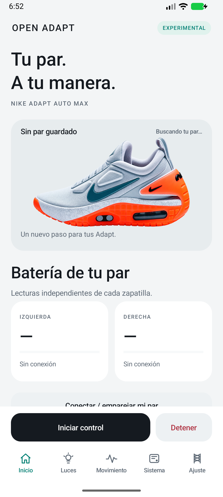
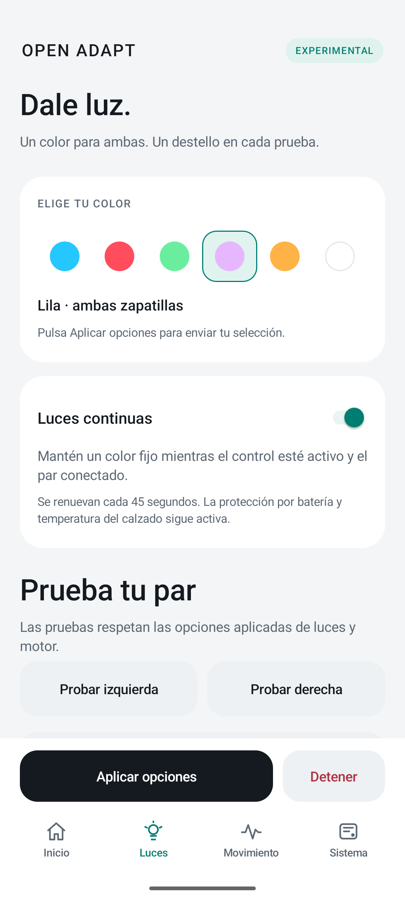

Know your charge.
Separate left and right battery percentages from authenticated shoe readings. Missing data stays missing—never a made-up number.
Independent community project
Your Adapt still have a story to tell. Open Adapt explores a way to bring their connected controls back to your hands.
v0.3.1 · Experimental · Android 7.0+

01 / THE REASON
Why nike discontinued this?...
“I own a pair of Nike Adapt. Without the app, they became unusable for the connected features I bought them for. I started Open Adapt because I wanted to use my shoes again.”
This project began with that very personal frustration. The goal is to explore a second life for the Auto Max: local controls, a clearer interface and a community that can keep learning how they work.
A personal account from the project creator. Basic shoe buttons may still operate independently of the original app.
02 / THE CONTROLS
Separate left and right battery percentages from authenticated shoe readings. Missing data stays missing—never a made-up number.
Color selection, individual light tests and a continuous-light mode that renews the effect while connected.
Phone-turn effects through a foreground service, including with the screen off. Foot-strike mode only reacts if the shoes already emit events.
Reuse locally stored pairing keys after a real first pairing. Updates replace the app without clearing its data.
Check public GitHub releases from the app, verify the download and confirm the update in Android.
Read versions, reported checksums and image states, then export a diagnostic. Full firmware backup and cloning are not implemented.
03 / IN YOUR HANDS
Four focused screens. Clear battery cards. Colors you can see before selecting. A stop button that stays within reach.
The app interface is currently in Spanish. This website is available in English and Spanish.
Read the validation report

Actual Android emulator screens. No shoes connected; battery percentages are intentionally absent.
04 / GET MOVING
Get the experimental APK from the official project release. Review the installation guide before trying it with your shoes.
Allow Bluetooth / Nearby Devices and complete real physical pairing. The app cannot import the original Nike app’s private keys.
For later versions, use System → App updates. Android asks you to approve installation; keep Open Adapt installed to retain local data.
OPEN DEVELOPMENT
The native interface and update policy have local tests. Actual Bluetooth pairing, battery readings, LEDs and lace-motor behavior still need validation on physical Auto Max shoes. Emulator checks do not establish hardware compatibility.
Optional lace movement is off by default and requires confirmation. Audible motor effects are unverified. Shoe foot-strike streaming cannot currently be activated by this build.
Read the validation reportA FEW THINGS TO KNOW
No. Open Adapt is an independent community project, with no affiliation or endorsement from Nike. Nike trademarks belong to their respective owners.
An in-place update with the same package and signing key preserves the app’s local data. A real first pairing is still necessary. Reconnection with physical shoes across an update remains to be validated. Uninstalling or clearing storage removes local data.
No. The project can read firmware diagnostics, but it does not extract or restore a complete firmware image. Matching version numbers alone do not establish that images are interchangeable.
The glowing Swoosh in the project artwork is an artistic treatment. Actual lighting effects depend on compatible shoe hardware and firmware. Phone turns do not identify individual footsteps.
KEEP THE PROJECT MOVING
If you share the idea of giving Adapt a second life, you can support the time spent on research, testing and documentation.
Optional support through PayPal. Donations do not promise compatibility or future features.